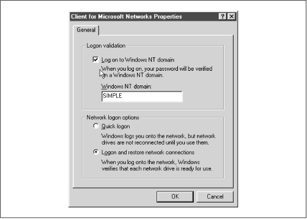
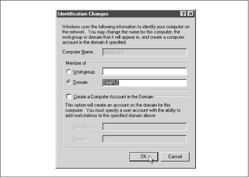

Using Samba
Robert Eckstein, David Collier-Brown, Peter Kelly1st Edition November 1999
1-56592-449-5, Order Number: 4495
416 pages, $34.95
|
|
|
|
|
Using SambaRobert Eckstein, David Collier-Brown, Peter Kelly1st Edition November 1999 1-56592-449-5, Order Number: 4495 416 pages, $34.95 |
6.5 Windows Domains
Now that you are comfortable with users and passwords on a Samba server, we can show you how to set up Samba to become a primary domain controller for Windows 95/98 and NT machines. Why use domains? The answer probably isn't obvious until you look behind the scenes, especially with Windows 95/98.
Recall that with traditional workgroups, Windows 95/98 simply accepts each username and password that you enter when logging on to the system. There are no unauthorized users with Windows 95/98; if a new user logs on, the operating system simply asks for a new password and authenticates the user against that password from then on. The only time that Windows 95/98 attempts to use the password you entered is when connecting to another share.
Domain logons, on the other hand, are similar to Unix systems. In order to log on to the domain, a valid username and password must be presented at startup, which is then authenticated against the primary domain controller's password database. If the password is invalid, the user is immediately notified and they cannot log on to the domain.
There's more good news: once you have successfully logged on to the domain, you can access any of the shares in the domain to which you have rights without having to reauthenticate yourself. More precisely, the primary domain controller returns a token to the client machine that allows it to access any share without consulting the PDC again. Although you probably won't notice the shift, this can be beneficial in cutting down network traffic. (You can disable this behavior if you wish by using the
revalidateoption.)6.5.1 Configuring Samba for Windows Domain Logons
If you wish to allow Samba to act as a domain controller, use the following sections to configure Samba and your clients to allow domain access.
If you would like more information on how to set up domains, see the DOMAINS.TXT file that comes with the Samba distribution.
6.5.1.1 Windows 95/98 clients
Setting up Samba as a PDC for Windows 95/98 clients is somewhat anticlimactic. All you really need to do on the server side is ensure that:
Samba is the only primary domain controller for the current workgroup.
There is a WINS server available on the network, either a Samba machine or a Windows NT server. (See Chapter 7, Printing and Name Resolution, for more information on WINS.)
Samba is using user-level security (i.e., it doesn't hand off password authentication to anyone else). You do not want to use domain-level security if Samba itself is acting as the PDC.
At that point, you can insert the following options into your Samba configuration file:
[global] workgroup = SIMPLE domain logons = yes # Be sure to set user-level security! security = user # Be sure to become the primary domain controller! os level = 34 local master = yes preferred master = yes domain master = yesThe
domainlogonsoption enables Samba to perform domain authentication on behalf of other clients that request it. The name of the domain will be the same as the workgroup listed in the Samba configuration file, in this case: SIMPLE.After that, you need to create a non-writable, non-public, non-browesable disk share called
[netlogon](it does not matter where this share points to as long as each Windows client can connect to it):[netlogon] comment = The domain logon service path = /export/samba/logon public = no writeable = no browsable = no6.5.1.2 Windows NT clients
If you have Window NT clients on your system, there are a few more steps that need to be taken in order for Samba to act as their primary domain controller.
WARNING: You will need to use at least Samba 2.1 to ensure that PDC functionality for Windows NT clients is present. Prior to Samba 2.1, only limited user authentication for NT clients was present. At the time this book went to press, Samba 2.0.5 was the latest version, but Samba 2.1 was available through CVS download. Instructions on downloading alpha versions of Samba are given in Appendix D, Downloading Samba with CVS.
As before, you need to ensure that Samba is a primary domain controller for the current workgroup and is using user-level security. However, you must also ensure that Samba is using encrypted passwords. In other words, alter the
[global]options the previous example to include theencryptedpasswords=yesoption, as shown here:[global] workgroup = SIMPLE encrypted passwords = yes domain logons = yes security = user6.5.1.3 Creating trust accounts for NT clients
This step is exclusively for Windows NT clients. All NT clients that connect to a primary domain controller make use of trust accounts. These accounts allow a machine to log in to the PDC itself (not one of its shares), which means that the PDC can trust any further connections from users on that client. For all intents and purposes, a trust account is identical to a user account. In fact, we will be using standard Unix user accounts to emulate trust accounts for the Samba server.
The login name of a machine's trust account is the name of the machine with a dollar sign appended to it. For example, if our Windows NT machine is named
chimaera, the login account would bechimaera$. The initial password of the account is simply the name of the machine in lowercase letters. In order to forge the trust account on the Samba server, you need to create a Unix account with the appropriate machine name, as well as an encrypted password entry in the smbpasswd database.Let's tackle the first part. Here, we only need to modify the /etc/passwd file to support the trust account; there is no need to create a home directory or assign a shell to the "user" because the only part we are interested in is whether a login is permitted. Therefore, we can create a "dummy" account with the following entry:
chimaera$:*:1000:900:Trust Account:/dev/null:/dev/nullNote that we have also disabled the password field by placing a
*in it. This is because Samba will use the smbpasswd file to contain the password instead, and we don't want anyone to telnet into the machine using that account. In fact, the only value other than the account name that is used here is the UID of the account for the encrypted password database (1000). This number must map to a unique resource ID on the NT server and cannot conflict with any other resource IDs. Hence, no NT user or group should map to this number or a networking error will occur.Next, add the encrypted password using the smbpasswd command, as follows:
#smbpasswd -a -m chimaeraAdded user chimaera$ Password changed for user chimaera$The
-moption specifies that a machine trust account is being generated. The smbpasswd program will automatically set the initial encrypted password as the NetBIOS name of the machine in lowercase letters; you don't need to enter it. When specifying this option on the command line, do not put a dollar sign after the machine name - it will be appended automatically. Once the encrypted password has been added, Samba is ready to handle domain logins from a NT client.6.5.2 Configuring Windows Clients for Domain Logons
Once you have Samba configured for domain logons, you need to set up your Windows clients to log on to the domain at startup.
6.5.2.1 Windows 95/98
With Windows 95/98, this can be done by raising the Network configuration dialog in the Windows Control Panel and selecting the Properties for "Client for Microsoft Networks." At this point, you should see a dialog box similar to Figure 6.4. Select the "Logon to Windows Domain" checkbox at the top of the dialog box, and enter the workgroup that is listed in the Samba configuration file as the Windows NT domain. Then click on OK and reboot the machine when asked.
Figure 6.4: Configuring a Windows 95/98 client for domain logons
WARNING: If Windows complains that you are already logged into the domain, you probably have an active connection to a share in the workgroup (such as a mapped network drive). Simply disconnect the resource temporarily by right-clicking on its icon and choosing the Disconnect pop-up menu item.
When Windows reboots, you should see the standard login dialog with an addition: a field for a domain. The domain name should already be filled in, so simply enter your password and click on the OK button. At this point, Windows should consult the primary domain controller (Samba) to see if the password is correct. (You can check the log files if you want to see this in action.) If it worked, congratulations! You have properly configured Samba to act as a domain controller for Windows 95/98 machines and your client is successfully connected.
6.5.2.2 Windows NT 4.0
To configure Windows NT for domain logons, open the Network configuration dialog in the Windows NT Control Panel. The first tab that you see should list the identification of the machine.
Press the Change button and you should see the dialog box shown in Figure 6.5. In this dialog box, you can choose to have the Windows NT client become a member of the domain by selecting the radio button marked Domain in the "Member of " box. Then, type in the domain that you wish the client to login to; it should be the same as the workgroup that you specified in the Samba configuration file. Do not check the box marked "Create a Computer Account in the Domain" - Samba does not currently support this functionality.
Figure 6.5: Configuring a Windows NT client for domain logons
WARNING: Like Windows 95/98, if NT complains that you are already logged in, you probably have an active connection to a share in the workgroup (such as a mapped network drive). Disconnect the resource temporarily by right-clicking on its icon and choosing the Disconnect pop-up menu item.
After you press the OK button, Windows should present you with a small dialog box welcoming you to the domain. At this point, you will need to reset the Windows NT machine. Once it comes up again, the machine will automatically present you with a log on screen similar to the one for Windows 95/98 clients. You can now log in using any account that you have already on the Samba server that is configured to accept logins.
WARNING: Be sure to select the correct domain in the Windows NT logon dialog box. Once selected, it may take a moment for Windows NT to build the list of available domains.
After you enter the password, Windows NT should consult the primary domain controller (Samba) to see if the password is correct. Again, you can check the log files if you want to see this in action. If it worked, you have successfully configured Samba to act as a domain controller for Windows NT machines.
6.5.3 Domain Options
Table 6.9 shows the options that are commonly used in association with domain logons.
Table 6.9: Windows 95/98 Domain Logon Options Option
Parameters
Function
Default
Scope
domain logonsboolean
Indicates whether Windows domain logons are to be used.
noGlobal
domain group mapstring (fully-qualified pathname)
Name of the file used to map Unix to Windows NT domain groups.
None
Global
domain user mapstring (fully-qualified pathname)
Name of the file used to map Unix to Windows NT domain users.
None
Global
local group mapstring (fully-qualified pathname)
Name of the file used to map Unix to Windows NT local groups.
None
Global
revalidateboolean
If
yes, Samba forces users to authenticate themselves with each connection to a share.
noShare
6.5.3.1 domain logons
This option configures Samba to accept domain logons as a primary domain controller. When a client successfully logs on to the domain, Samba will return a special token to the client that allows the client to access domain shares without consulting the PDC again for authentication. Note that the Samba machine must be in user-level security (
security=user) and must be the PDC in order for this option to function. In addition, Windows machines will expect a[netlogon]share to exist on the Samba server (see the section Section 6.5.1, Configuring Samba for Windows Domain Logons," earlier in this chapter).6.5.3.2 domain group map
This option specifies the location of a mapping file designed to translate Windows NT domain group names to Unix group names. The file should reside on the Samba server. For example:
/usr/local/samba/private/groups.mappingThe file has a simple format:
UnixGroup = NTGroupAn example is:
admin = AdministrativeThe specified Unix group should be a valid group in the /etc/group file. The NT group should be the name to which you want the Unix group to map on an NT client. This option will work only with Windows NT clients.
6.5.3.3 domain user map
This option specifies the location of a mapping file designed to translate Unix usernames to Windows NT domain usernames. The file should reside on the Samba server. For example:
/usr/local/samba/private/domainuser.mappingThe file has a simple format:
UnixUsername= [\\Domain\\]NTUserNameAn example entry is:
joe = Joseph MillerThe Unix name specified should be a valid username in the /etc/passwd file. The NT name should be the username to which you want to Unix username to map on an NT client. This option will work with Windows NT clients only.
If you would like more information on how Windows NT uses domain usernames and local groups, we recommend Eric Pearce's Windows NT in a Nutshell, published by O'Reilly.
6.5.3.4 local group map
This option specifies the location of a mapping file designed to translate Windows NT local group names to Unix group names. Local group names include those such as Administrator and Users. The file should reside on the Samba server. For example:
/usr/local/samba/private/localgroup.mappingThe file has a simple format:
UnixGroup= [BUILTIN\]NTGroupAn example entry is:
root = BUILTIN\AdministratorsThis option will work with Windows NT clients only. For more information, see Eric Pearce's Windows NT in a Nutshell (O'Reilly).
6.5.3.5 revalidate
This share-level option tells Samba to force users to authenticate with passwords each time they connect to a different share on a machine, no matter what level of security is in place on the Samba server. The default value is
no, which allows users to be trusted once they successfully authenticate themselves. You can override it as:revalidate = yesYou can use this option to increase security on your system. However, you should weigh it against the inconvenience of having users revalidate themselves to every share.
 |
 |
 |
| 6.4 Passwords |
 | 6.6 Logon Scripts |
Back to: Using Samba
© 1999, O'Reilly & Associates, Inc.